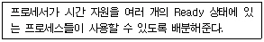
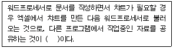
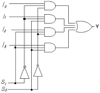
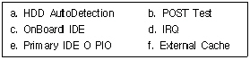

PC정비사-1급 (2001-09-23 기출문제)
1과목: PC운영체제
1. 다음 중 시스템에 연결된 하드웨어와 하드웨어 제어기 정보 및 소프트웨어에 대한 정보가 저장되어 있는 곳은?
- HKEY_CLASEES_ROOT
- HKEY_CURRENT_USER
- HKEY_LOCAL_MACHINE
- HKEY_CURRENT_CONFIG
(정답률: 알수없음)

2. 다음 중에서 NFS(Network File System)를 지원하지 않는 운영체제를 선택하시오.
- Solaris
- Free BSD
- Windows98
- Linux
(정답률: 알수없음)
3. Windows98에서 사용하는 단축키 기능에 대한 설명이 잘못된 것은?
- Ctrl + X : 잘라내기
- Alt + F4 : 프로그램 종료
- Ctrl + A : 시작메뉴 호출
- Alt + Enter : 등록정보 보기
(정답률: 알수없음)
4. 운영체제에서 다음 기능을 수행하는 것은?

- 메모리 할당 (Memory Assignment)
- 교착 상태 (Deadlock)
- 트래픽 제어기 (Traffic Controller)
- 스케쥴러 (Scheduler)
(정답률: 50%)
5. 다음 ( )에 적당한 용어는?

- OLE
- DLL
- INI
- PCX
(정답률: 70%)
6. DOS와 Windows98 그리고 LINUX 운영체제를 하나의 컴퓨터에서 사용하려고 할때 인스톨 순서는?
- DOS - LINUX - Windows98
- 함께 사용할 수 없다.
- DOS - Windows98 - LINUX
- LINUX -Windows98 - DOS
(정답률: 46%)
7. Windows98에서 특정파일에 해당하는 연결프로그램을 바꾸려고 할 때 잘못된 것은?
- 폴더의 보기메뉴에서 폴더옵션 - 파일형식을 선택한다.
- 파일을 Ctrl 키를 누른 상태에서 오른쪽마우스버튼을 클릭한다.
- 해당 프로그램을 다시 인스톨한다.
- 파일을 shift키를 누른 상태에서 오른쪽마우스버튼을 클릭하여 연결프로그램을 수정한다.
(정답률: 알수없음)
8. Windows98 운영체제는 별도의 옵션을 추가하지 않아도 메모리 관리자에 의해 자동으로 메모리 관리가 가능하다. 다음 중 config.sys 구성없이 사용 가능한 메모리 관리자는?
- himem.sys
- emm386.exe
- smartdrv.exe
- msdos.sys
(정답률: 알수없음)
9. Windows98의 레지스트리에 대한 설명으로 잘못된 것은?
- 텍스트 기반이며, 크기가 64KB를 넘지 못한다.
- 정렬된 계층구조를 가진다.
- HKey-User키로 사용자별 정보를 지원한다.
- 원격지에서 관리와 시스템 정책을 할 수 있다.
(정답률: 알수없음)
10. 스케쥴링 기법을 이용하여 일정한 시간을 할당받아 CPU를 사용케 하는 시스템은?
- 일괄 처리 시스템
- 다중 프로그램 시스템
- 시분할 처리 시스템
- 병렬 처리 시스템
(정답률: 알수없음)
11. 디지털 카메라를 구성하는 요소 중 CCD(Charge Coupled Device)의 설명이 옳은 것은?
- 어두운 곳에서 촬영할 때 빛을 발광하여 사진을 찍을 수 있게 하는 장치
- 셔터속도와 연속촬영을 제어하는 장치
- 프리뷰(Preview)나 리뷰(Review) 용도로 사용하는 액정화면
- 빛의 신호를 전기적 신호로 변환시키는 기능을 가진 장치
(정답률: 84%)
12. 비디오 카드는 모니터에 나타낼 신호를 출력해주는 장치이다. 비디오카드의 선택시 유의 사항과 거리가 먼 것은?
- 지원 드라이브의 호환성을 충분히 고려한다.
- 해상도와 색상수를 알아보고 알맞은 것을 선택한다.
- 처리속도가 빠른 것을 선택한다.
- 프레임 버퍼(메모리)는 작은 것을 선택한다.
(정답률: 알수없음)
13. 다음은 마우스와 관련된 고장이다. 고장 원인에 따른 수리방법으로 가장 적절한 것은?
- 마우스 포인터가 수평이동이 되지 않는 경우 - 키보드를 제거한 후 다시 장착한다.
- 마우스와 내장형 모뎀이 충돌할 경우 - 사운드 카드를 제거한 후 Windows98 프로그램을 다시 설치한다.
- 마우스 포인터가 화면에 나타나지 않는 경우 - 제어판에 있는 디스플레이를 변경한다.
- '마우스를 찾을 수 없다'는 메시지가 나타나는 경우 - 연결포트를 다시 점검한다.
(정답률: 알수없음)
14. 모니터에 대한 설명 중 옳지 않은 것은?
- 모니터 성능의 중요 요소인 리프레시 레이트는 화면 갱신율을 나타내는 것으로서, 눈의 피로도를 줄이기 위해 VESA는 이 리프레시 레이트를 60Hz 이상으로 규정하고 있다.
- 일반적으로 모니터 크기와 해상도의 관계는 14인치가 640x480, 15인치가 800x600, 17인치가 1024x768을 권장사항으로 하고 있다.
- 모니터의 크기가 클수록 화면 가시영역이 넓어져 다중작업을 수행하는데 효과적이다.
- 일반적으로 모니터의 크기가 커지면 소모되는 소비 전력도 동반 상승한다.
(정답률: 알수없음)
15. 다음 중 주변장치와 컴퓨터 시스템에 대한 설명으로 거리가 먼 것은?
- 램은 CPU가 필요로 하는 명령과 데이터 체계를 보관해주는 역할을 한다.
- 비디오 카드에 장착되는 램은 VRAM 보다 EDO RAM이 더 좋다.
- 마우스는 키보드로 입력하기 힘든 그래픽 데이터를 입력할 때 효과적으로 쓰인다.
- MMX CPU는 멀티미디어 데이터를 효과적으로 처리하기 위해 개발되었다.
(정답률: 알수없음)
2과목: PC주변기기
16. 다음 중 CPU의 개입 없이 외부장치와 기억장치 사이에 자료 전달을 직접 할 목적을 지닌 것은?
- I/O Port
- PIO
- 폴링
- DMA
(정답률: 67%)
17. 디지털 카메라로 찍은 사진을 컴퓨터로 가져오기 위해 필요한 드라이버는?
- IDE
- GUI
- CUI
- TWAIN
(정답률: 알수없음)
18. CD-ROM의 전송속도가 느린 직접적인 이유는?
- 데이터의 기록방법이 등선속도방식이므로
- CD-ROM의 회전속도가 느리므로
- ATAPI 인터페이스를 사용하므로
- 반사되는 빛을 분석하여 데이터를 인식하므로
(정답률: 알수없음)
19. 다음 중 HP사가 레이저프린터와 PC간의 통신을 제어하기 위하여 개발한 특수 언어는?
- ECL
- PCL
- CCD
- ECP
(정답률: 60%)
20. 다음 중 CPU의 설명으로 잘못된 것은?
- 펜티엄ll와 파워칩의 명령어 처리는 RISC방식이다.
- 80486과 MMX의 명령어 처리는 CISC 방식이다.
- 펜티엄의 처리 속도는 66,100,200,233MHz 등이 있다.
- 파워칩의 처리속도는 250, 375, 400MHz 등이 있다.
(정답률: 알수없음)
21. 모니터와 본체를 연결하는 커넥터는 15핀을 사용한다. 다음 중 핀의 번호와 사용 용도가 잘못된 것은?
- 1,2,3 - R, G, B 선
- 6, 7, 8 - 접지
- 4, 5, 9 - 핀 없음
- 13, 14- 수평, 수직동기
(정답률: 알수없음)
22. ISO에 의하여 제정된 CD-ROM의 국제 형식규격으로 High Sierra 규격에 기초를 둔 규격은?
- ISO9000
- ISO9002
- ISO9096
- ISO9660
(정답률: 67%)
23. DVD-ROM에 대한 설명으로 틀린 것은?
- 비디오, 오디오, 컴퓨터 데이터를 포괄하는 새로운 저장매체
- 16 : 9 와이드 화면을 수용하며, 음향은 5.1 채널이 지원
- MPEG 4에 따라 부호화하여 저장
- 보통 4.7GB에서 최대 17GB까지 저장 가능
(정답률: 알수없음)
24. 다음 중 메인보드의 구성 요소와 거리가 먼 것은?
- FDD 커넥터
- VRAM
- 바이오스
- 배터리
(정답률: 알수없음)
25. 다음 중 RAM이 사용되는 곳의 설명으로 틀린 것은?
- RAM은 데이터와 명령어를 임시로 저장하는 장치이다.
- 메인보드에 사용되는 캐시는 대개 SRAM을 사용한다.
- 프린터에 사용되는 메모리는 대개 DRAM을 사용한다.
- 고성능 SCSI어댑터의 입출력 버퍼용으로 대개 FLASH RAM을 사용한다.
(정답률: 알수없음)
26. 모뎀에 대한 설명 중 올바른 것은?
- 56Kbps는 모뎀의 전송 속도를 나타내는 것으로서 초당 56000 비트를 전송할 수 있음을 나타내는 것이다, 따라서 56Kbps급 모뎀은 항상 56000 비트 이상을 전송할 수 있음을 보장한다.
- 14.4k 이상의 속도를 내는 외장형 모뎀의 경우 시스템에 내장되어 있는 UART의 기능을 고려하지 않아도 된다.
- ISDN은 제어와 데이터 전송을 위해 3개의 채널을 사용하여 128Kbps의 속도를 제공하는 전화망에 비해 고속의 통신 수단으로서 전화와 데이터 통신을 동시에 할 수 있게 한다.
- 팩스 모뎀에서 팩스 송수신을 위한 속도는 96000bps의 속도로 전송된다.
(정답률: 알수없음)
27. '셀러론 300' 이후 L2(128KB) 캐시장착 제품을 '셀러론 300A'라 불렀듯이 인텔의 펜티엄-III 프로세서에도 'B'와 'E' 등과 같은 확장자가 붙여지게 된다. 다음 중 올바른 것은?
- PllI-600EB MHz → Intel Pentium III 600MHz (133MHz FSB, on-chip 256KB L2 캐시)
- PIII-600B MHz → Intel Pentium III 600MHz (100MHz FSB, on-chip 256KB L2 캐시)
- PIII-600E MHz → Intel Pentium III 600MHz (100MHz FSB, off-chip 512KB L2 캐시)
- PIII-600EB MHz → Intel Pentium III 600MHz (133MHz FSB, off-chip 512KB L2 캐시)
(정답률: 알수없음)
28. 다음 중 음성 압축 포맷에 대한 설명으로 올바르지 못한 것은?
- RA,RAM,RM은 MP3나 VQF와 같은 압축 포맷에 비하여 상대적으로 음질이 떨어진다.
- MP3기법을 사용하면 44.1Khz CD음질을 지닌 오디오 사운드 데이터를 최대 1/12까지 압축할 수 있다.
- MP4 포맷은 동일한 데이터를 압축할 때 MP3보다 압축률은 떨어지지만, 음질이 훨씬 뛰어나기 때문에 차세대 압축형식으로 각광받고 있다.
- VQF란 NTT에서 개발한 오디오 압축기술로 MP3수준의 음질을 들을 수 있다.
(정답률: 50%)
29. CD롬 타이틀을 제작하는 과정에서 'Tracking Error' 메시지가 자주 출력된다. 이 원인과 관련된 가장 적절한 설명은?
- 터미네이션, 즉 인터페이스에 문제가 있다.
- CD-R 미디어 자체 이상이다.
- 원래 DATA에 문제가 있다.
- CD-R기기가 지원하지 않는 형식의 CD롬 타이틀을 만들려고 했다.
(정답률: 알수없음)
30. 다음 중 하드디스크의 저장 방식이 아닌 것은?
- NRZ (Non Return to Zero)
- FM (Frequency Modulation)
- RLL (Run Length Limited)
- CRLL (Call Run Length Limited)
(정답률: 알수없음)
3과목: 디지털 논리회로
31. 다음 그림과 같은 회로는 무엇인가?

- 인코더
- 8 x 1 멀티플렉서
- 4 x 1 멀티플렉서
- 디코더
(정답률: 알수없음)
32. 논리회로에서 기본적 특성을 비교할 때 고려하지 않는 항은?
- 팬아우트
- 전력소모량
- 발진주파수
- 잡음여유도
(정답률: 알수없음)
33. 정수의 표현범위가 8비트인 경우 1의 보수 표현범위는?
- -128 ~ 127
- -127 ~ 127
- -256 ~ 257
- -257 ~ 257
(정답률: 알수없음)
34. 다음 중 사용자가 프로그램할 수 없는 ROM은?
- EPROM
- PROM
- EEPROM
- Mask ROM
(정답률: 알수없음)
35. 다음 중 7Bit로 구성된 코드는?
- EBCDIC 코드
- 3증 코드
- ASCII 코드
- BCD 코드
(정답률: 100%)
4과목: PC유지보수
36. 하드웨어 디바이스나 드라이버를 확장할 때 사용자의 편의를 돕기 위해 사용자가 설정할 필요 없이 운영체제가 자동으로 설정해주는 기능은?
- 멀티태스킹
- 스풀링
- 플러그 앤 플레이
- 일괄처리
(정답률: 알수없음)
37. 다음은 모뎀 설치가 제대로 이루어지지 않는 문제점을 해결하기 위한 방법을 나열한 것이다. 틀리게 설명한 것은?
- [제어판-시스템-장치관리자]로 이동하여 다른 장치와 충돌여부를 확인하고 수정한다.
- 모뎀에 맞는 드라이버를 설정하였는지 확인한다.
- 설치된 모뎀을 제거하고 [제어판-새 하드웨어 추가]를 이용하고 다시 설치한다.
- 프린터와의 충돌이 빈번히 생기므로 프린터 포트를 뽑고 재시작하여 모뎀을 잡는다.
(정답률: 알수없음)
38. 다음 중 파일 할당 테이블(FAT)에 대하여 틀리게 설명한 것은?
- FDISK.EXE 파일은 FAT32를 지원한다.
- FAT32는 클러스터 사이의 갭 낭비를 최소화할 수 있다.
- FAT32는 2GB이상의 드라이브를 단일 파티션으로 인식하게 할 수 있다.
- 6GB 하드디스크를 FAT32로 파티션을 설정하면 2GB드라이브 3개로 설정해야 한다.
(정답률: 알수없음)
39. 시스템이 C드라이브를 엑세스 할수 있으나 C드라이브로 부팅은 되지 않는다. 그 원인 해결방법과 관계가 없는것은?
- 신형 BIOS의 경우 Boot 기기 순서를 정하는 항목에서 HDD0이 있는지 확인하고 없으면 HDD0으로 설정한다.
- FDISK에서 Active설정을 확인한다.
- 시스템 파일을 C드라이브로 전송한다.
- HDD의 파티션을 C, D드라이브 2개로 분할한다.
(정답률: 70%)
40. 바이오스 업그레이드를 하려고 할 때 유의사항이 아닌 것은?
- 바이오스를 업그레이드 할 때는 정상으로 부팅하여 진행시킨다.
- 업그레이드 도중에 컴퓨터의 전원을 꺼서는 안된다.
- 메인보드의 종류에 따라 업그레이드 방법이 다르므로 미리 확인해야 한다.
- 바이오스를 업그레이드 할 때는 반드시 안전모드로 부팅하여 진행시킨다.
(정답률: 알수없음)
41. 프로그램을 안전하게 제거하는 방법으로 올바르지 않은 것은?
- 제어판의 프로그램 추가/제거 기능을 이용한다.
- 프로그램에서 제공하는 언인스톨 기능을 이용한다.
- 탐색기에서 프로그램 폴더를 찾아 삭제한다.
- 클린스윕과 같은 설치/제거 관리 프로그램을 이용한다.
(정답률: 60%)
42. 컴퓨터에 이상이 발생했을 때 조치사항으로 올바른 것은?
- 컴퓨터에 바이러스가 감염된 경우에는 컴퓨터를 끄지 않은 상태에서 즉시 바이러스 치료 프로그램을 작동 시켜야 한다.
- 시스템이 갑자기 다운되면 웜부팅보다 콜드부팅을 먼저 시도해 보는 것이 좋다.
- 윈도우에 문제가 생기면 재설치하기 전에 우선 손상된 파일복구 기능을 이용해서 복구를 시도해 본다.
- 레지스트리에 문제가 발생하게 되면 윈도우를 재설치 하는 방법으로만 복구가 가능하다.
(정답률: 알수없음)
43. 인쇄속도가 느려지거나 프린터가 제대로 작동하지 않는 경우의 해결 방법으로 옳지 않은 것은?
- CMOS Setup에서 패러럴 포트의 설정을 바꿔본다.
- 프린터 장치 드라이버를 새로운 것으로 바꿔본다.
- 하드디스크 공간이 부족한지 확인한다.
- 인쇄 작업을 취소한 후, 다시 인쇄 작업을 시작한다.
(정답률: 알수없음)
44. 윈도우를 사용하는 도중 속도가 점점 느려지는 현상이 발생하였다. 문제의 원인으로 볼 수 없는 것은?
- 레지스트리가 점점 커지고 불필요한 내용이 쌓이기 때문이다.
- 윈도우에서 사용하는 DLL과 드라이버 파일이 많아지기 때문이다.
- 하드디스크의 단편화가 심해지기 때문이다.
- 디스크 캐시와 가상 메모리의 성능이 저하되기 때문 이다.
(정답률: 알수없음)
45. 다음 설명 중 옳지 않은 것은?
- CMOS Setup으로 들어가기 위해서는 컴퓨터를 켠 후, Delete 키, 또는 ESC 키나 F2 키등 지정 된 키를 눌러야 한다.
- 일반적으로 PCI방식이 ISA방식보다 데이터 전송속도가 빠르다.
- Award BIOS에서 Virus Warning 항목이 Enable되어 있는 경우, FDISK 명령어가 제대로 작동하지 않을 수 있다.
- 속도가 서로 다른 램이 하나의 시스템 안에 함께 장착되어 있는 경우, 전체 메모리 작동 속도는 가장 빠른 램의 속도에 맞추어 진다.
(정답률: 47%)
46. 다음 중 소프트웨어의 유지 보수 방법으로 가장 부적당한 것은?
- 장애 이력 사항의 유지
- 장애 이력 사항의 분석
- 파일업데이트를 이용하여 최신 자료로 회복
- 부정기적인 예방 점검의 실시
(정답률: 알수없음)
47. 키보드의 지연시간이 가장 빠르게 표시된 것은?
- MODE COM RATE = 30 DELAY = 1
- MODE COM RATE = 30 DELAY = 10
- MODE COM RATE = 30 DELAY = 20
- MODE COM RATE = 30 DELAY = 30
(정답률: 80%)
48. 디스크 오류에 대한 다음 설명 중 적절하지 못한 것은?
- 하드디스크가 갑자기 인식이 되지 않을 때 BIOS Setup에서 하드디스크가 제대로 등록되어 있는지 확인해 보고 등록되어 있지 않다면 이를 수정해 준다.
- BIOS에서 디스크가 제대로 등록되어 있는 상태에서 부팅이 되지 않을 경우 디스켓으로 부팅 한 후 하드디스크에 접속해 본다.
- 만일 나 항에서 접근하려는 드라이브 문자를 인식 할 수 없다는 메시지를 출력하면서 접근할 수 없는 상태라면 디스크에 대한 파일 시스템이 손상된 상태이므로 Format을 수행하여 디스크의 파일 시스템을 복구한다.
- 디스크의 포맷은 디스크 내의 모든 데이터를 삭제하는 것이므로 백업 등 데이터 복구를 위한 모든 조치를 취한 후 신중히 수행해야 한다.
(정답률: 알수없음)
49. 다음은 CMOS에서 제어할 수 있는 옵션 명령어이다. 하드디스크가 부트되지 않을 때 반드시 점검해 보아야 할 옵션 명령어만으로 구성된 것을 선택하시오.

- a, b, c, d
- b, d, f
- a, b, c, e, f
- a, c, e
(정답률: 알수없음)
50. Windows 95/98 운영체제와 Linux 운영체제를 멀티부트 환경에서 사용하였다. 그러나 멀티부트 환경을 완전히 제거하고 Windows 95/98 운영체제만으로 사용할 경우 정상부트되지 않는 것을 볼 수 있다. 이때 가장 적절한 조치사항은?
- fdisk - 실행영역을 지정(부트 활성화)한다.
- CMOS - Boot Disk 지정(C Only)한다.
- 'format c: /s' 명령으로 다시 포맷한다.
- 'fdisk / mbr' 명령을 수행한다.
(정답률: 50%)
5과목: PC네트워크
51. 다음 중 기본접속 ISDN내에 존재하는 채널의 숫자가 올바른 것은?
- B Channel : 1개, D Channel : 1개
- B Channel : 2개, D Channel : 1개
- B Channel : 2개, D Channel : 2개
- B Channel : 3개, D Channel : 1개
(정답률: 55%)
52. 다음 중 NetBIOS Protocol의 기능이 아닌 것은?
- 이름지원 : 네트웍상에 자신의 컴퓨터와 그 컴퓨터가 속한 그룹명을 나타낸다.
- Session지원 : 다른 컴퓨터에 접속하거나 접속을 해제한다.
- Datagram지원 : 네트워킹의 기반이 되는 Datagram을 전송하고 받는 기능을 제공한다.
- Internet지원 : 인터넷을 사용할 수 있는 프로토콜로 Internet에 컴퓨터를 연결한다.
(정답률: 알수없음)
53. 프로토콜의 기능 중 상위계층으로부터 받은 데이터에 자신의 제어정보를 추가하는 기능은?
- 캡슐화(Encapsulation)
- 조립(Assembly)
- 동기화(Synchronization)
- 다중화(Multiplexing)
(정답률: 알수없음)
54. 다음 중 프록시의 기능을 설명한 것은?
- 자주 접속하는 사이트의 데이터를 서버에 저장해 둠으로서 인터넷 속도를 개선하는 기능이다.
- 접속했던 사이트의 기록을 제거하는 기능이다.
- 인터넷 접속을 위한 통신 프로토콜 기능이다.
- 인터넷의 웹 접속 기록을 저장하는 기능이다.
(정답률: 알수없음)
55. 인터넷에서 전자우편을 사용하기 위해 반드시 설정해야 하는 서버의 종류는?
- IMAP, SNMP
- SMTP, NNTP
- POP, SMTP
- POP, IMAP
(정답률: 알수없음)
56. 다음 중 도메인 이름을 IP 주소로 바꾸어 주는 것은?
- 허브
- 라우터
- 프록시서버
- DNS 서버
(정답률: 알수없음)
57. 다음 인터넷 프로토콜 중 데이터의 흐름을 관리하고 데이터가 정확한지 검사하는 것은?
- IPX
- SPX
- TCP
- IP
(정답률: 알수없음)
58. 다음 전송매체 중 10BASE-T에서 사용되며 10MBPS의 속도로 전송할 수 있는 전송매체는?
- 동축케이블
- 광섬유
- UTP
- STP
(정답률: 알수없음)
59. 인터넷에서 외부로부터 불법 침입을 막고 접근 통제를 주된 목적으로 설치되는 장비는?
- Firewall
- Proxy Server
- File Server
- Gateway
(정답률: 73%)
60. 통신망과 통신망을 연결하는데 있어서 단순히 전송 신호만을 증폭해서 다시 전송해주는 역할을 수행하는 것은?
- Bridge
- Router
- Repeater
- Gateway
(정답률: 알수없음)